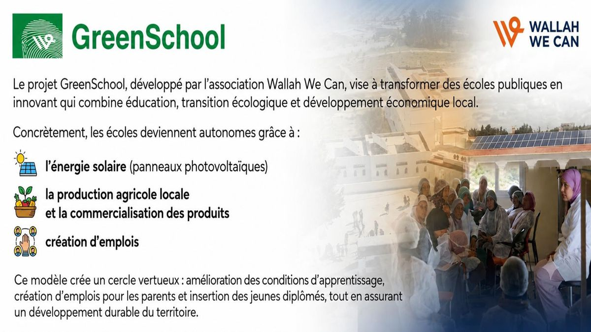
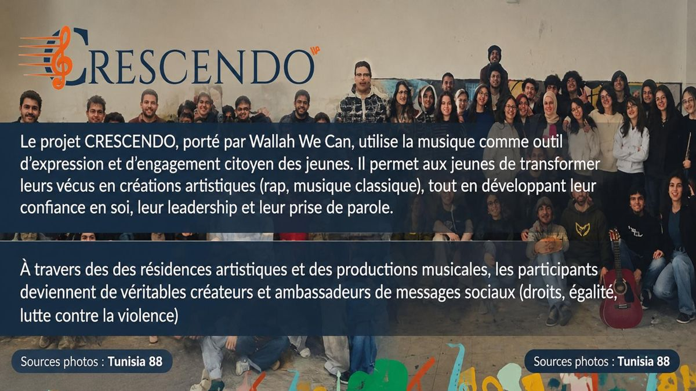
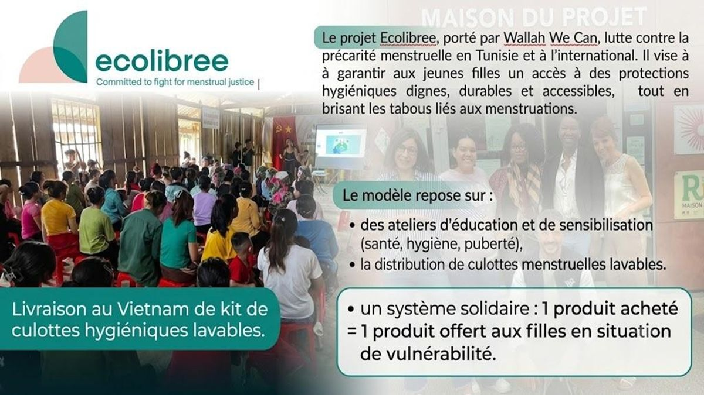
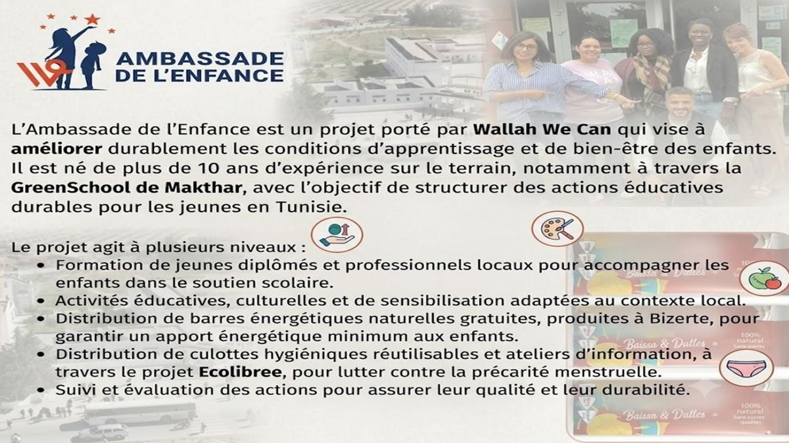

Mémoire de Master en Management de la Performance et RSO, ISCAE, Université de la Manouba
Chez Wallah We Can, la responsabilité sociétale est présente partout, mais nulle part comme système.
Ce site présente le diagnostic RSO de l'association, mené avec la norme ISO 26000, et la stratégie proposée pour piloter, mesurer et prouver ce qu'elle accomplit déjà.
3,6 / 5 en moyenne
Survolez ou sélectionnez un domaine pour voir le détail.
Une association qui transforme l'école en entreprise sociale
Fondée en 2012 par Lotfi Hamadi, Wallah We Can (« Oui, nous le pouvons ») agit pour l'éducation, la santé et la protection des enfants en Tunisie et à l'international. Son idée : faire de l'école publique un lieu qui produit son énergie, une partie de son alimentation et des emplois pour les familles.
- 750 000 kWh
- d'énergie solaire produits (cumul affiché en 2026)
- Plus de 9 000
- enfants accompagnés
- 150
- emplois directs et indirects créés
- 6 pays
- Tunisie, France, États-Unis, Belgique, Palestine, Liban
Données déclarées par l'association, non vérifiées par un tiers.




Le diagnostic : une maturité réelle mais inégale
Les pratiques ont été évaluées sur les sept questions centrales de l'ISO 26000, à partir d'entretiens, de documents internes et d'une observation sur le terrain. Six domaines sur neuf atteignent le niveau intégré. L'écart le plus net concerne l'environnement : les pratiques sont fortes, leur mesure est presque absente.
Ce qui porte la démarche, ce qui la freine
Forces
- Gouvernance documentée : chartes, audits, rapports publiés
- Modèle GreenSchool qui réunit les trois piliers du développement durable
- Impact social important et ancré localement
- Réseau de partenaires institutionnels, privés et internationaux
Faiblesses
- Aucun système RSO piloté, aucun rapport RSO
- Politique RH et cadre des bénévoles incomplets
- Mesure environnementale insuffisante
- Décisions stratégiques très centralisées
Opportunités
- Bailleurs de plus en plus exigeants sur la preuve d'impact
- Essor de l'entrepreneuriat social en Tunisie
- Financements dédiés au développement durable
Menaces
- Concurrence entre ONG pour les mêmes financements
- Évolution possible du cadre des financements étrangers
- Instabilité des contextes en Palestine et au Liban
Neuf enjeux prioritaires sur douze
Chaque enjeu est placé selon son importance pour les parties prenantes et pour la mission de l'association. Ceux qui dépassent 3,5 sur les deux axes fondent la stratégie.
Une stratégie en quatre axes
L'ambition n'est pas d'ajouter des actions, mais de relier celles qui existent. Chaque axe répond à un groupe d'enjeux prioritaires et s'aligne sur l'ISO 26000 et les Objectifs de développement durable.
Qui pilote ?
Un comité de pilotage RSO de cinq membres se réunit chaque trimestre : le président, le référent RSO, un chef de projet, un représentant des bénévoles et une partie prenante externe. Le référent RSO consolide les indicateurs et prépare le rapport annuel.
Comment ?
- Planifier les objectifs annuels et les indicateurs
- Réaliser les actions dans les projets
- Vérifier les écarts chaque trimestre
- Améliorer le plan et publier le rapport
Dix-huit mois pour installer la démarche
La protection de l'enfance et le pilotage démarrent en premier : la première conditionne le déploiement de l'Ambassade de l'Enfance, le second conditionne tout le reste.
Vingt-trois indicateurs pour suivre les progrès
Pour les indicateurs nouveaux (CO₂, SROI, égalité), la cible de la première année est d'établir une valeur de référence fiable.
| Indicateur | Unité | Fréquence | Cible année 1 |
|---|
Méthode
Étude de cas qualitative menée pendant un stage d'immersion au sein de Wallah We Can : entretiens semi-directifs, analyse documentaire et observation participante. Les constats ont été évalués avec une grille fondée sur l'ISO 26000, une échelle de maturité à cinq niveaux et une analyse de matérialité.
Crédits
Mémoire réalisé par [Prénom NOM], Master Professionnel en Management de la Performance et Responsabilité Sociétale des Organisations, ISCAE, année universitaire 2025-2026.
Encadrement académique : [Mme / M. Prénom NOM]. Maître de stage : [Mme / M. Prénom NOM].
Cette plateforme a été conçue en collaboration avec une équipe de développeurs afin de digitaliser les résultats du mémoire et d'en faciliter le suivi par l'association et ses partenaires.